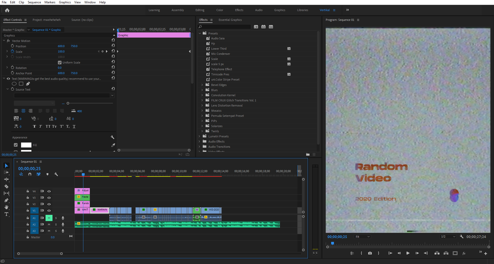
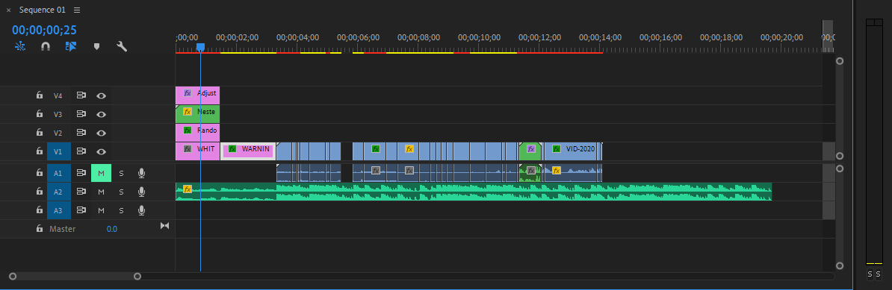
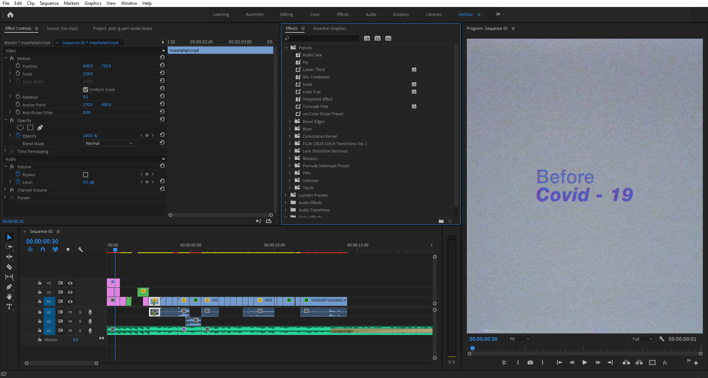
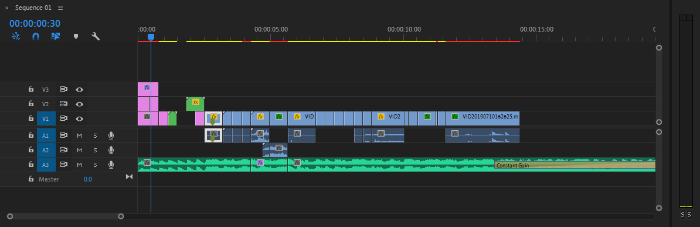

<headline/>
Random Video
// Timeline Breakdown - Mini Vlog 1

<tagline>
Premiere Pro
Project
<tagline/>
Video Timeline

Sequence Info
- Musik : Action Bronson - Pouches of Tuna Remix
- Resolusi : 1200 x 1500 @29.97fps
- Audio : 48000 Hz - Stereo
- Durasi : 00;00;19;22
Aplikasi
- Adobe Premiere Pro
- Adobe Audition
<headline/>
Before Covid - 19
// Timeline Breakdown - Mini Vlog 2

<tagline>
Premiere Pro
Project
<tagline/>
Video Timeline

Sequence Info
- Musik : Flero - Le Jazz Cafe (Free Music for Vlogs)
- Resolusi : 1200 x 1500 @60fps
- Audio : 48000 Hz - Stereo
- Durasi : 00;00;19;29
Aplikasi
- Adobe Premiere Pro
- Adobe Audition